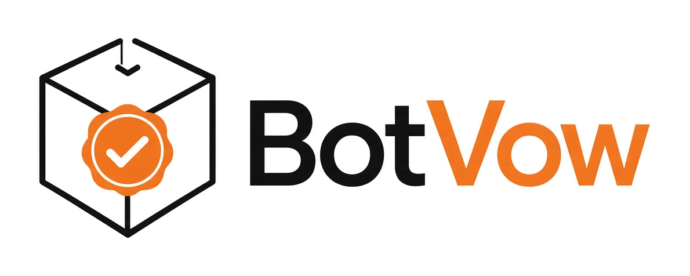

the bot's vow — the black box for Bots
BotVow is an open, tamper-evident record of what two Bots agreed: who agreed what, who authorised it, and when — co-signed by both and verifiable by anyone with nothing but public keys.
git clone https://github.com/Santiago1971/botvow
cd botvow && pip install -r requirements.txt && ./run_demo.shRepository · Spec · Roadmap · Overview · Projeto (PT)
BotVow is evidence, not a notary or a contract. Status: v0.1 prototype. Trademark checks pending.
PT: O BotVow («a promessa do bot») é a caixa negra dos Bots. Os Bots são o núcleo; agentes de outras IA podem registar acordos, mas com as mesmas regras, sem exceções.